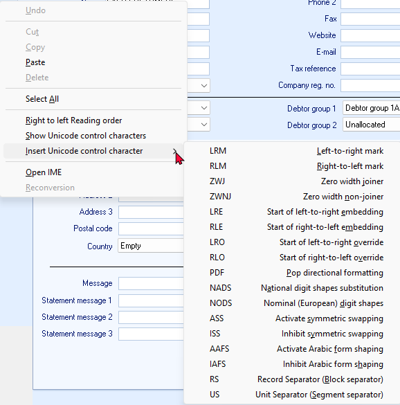

Unicode - Context menu on forms
Unicode context menu options of forms
In osFinancials5/TurboCASH5, the context menu on most fields in forms, such as Debtors, Creditors, Stock on the Default ribbon and Accounts, Groups on the Setup menu, include the following context menu items related to Unicode (if Unicode is enabled).

These context menu items in osFinancials5/TurboCASH5, specifically related to Unicode, provide advanced text formatting and control options when working with characters beyond the standard ASCII set.
Explanation of Context Menu Items
Let's break down what each option means and its function:
- Right to Left Reading Order
- Function: This option controls the reading direction of the text. When enabled, the text in the field will be displayed and processed from right to left, which is essential for languages like Arabic and Hebrew.
- Show Unicode Control Characters
- Function: This option displays invisible Unicode control characters that might be present in the text. These characters can affect text formatting and rendering, so visualizing them can help troubleshoot display issues.
- Insert Unicode Control Character
- Function: This allows you to manually insert specific Unicode control characters into the text. These characters are used to fine-tune text direction, shaping, and rendering:
- LRM (Left-to-right Mark): Forces the following characters to be displayed left-to-right.
- RLM (Right-to-left Mark): Forces the following characters to be displayed right-to-left.
- ZWJ (Zero Width Joiner): Connects two characters that might otherwise be separated.
- ZWNJ (Zero Width Non-Joiner): Prevents two characters from being connected.
- LRE (Start of Left-to-right Embedding): Starts a region of left-to-right text within right-to-left text.
- RLE (Start of Right-to-left Embedding): Starts a region of right-to-left text within left-to-right text.
- LRO (Start of Left-to-right Override): Overrides the current text direction and sets it to left-to-right.
- RLO (Start of Right-to-left Override): Overrides the current text direction and sets it to right-to-left.
- PDF (Pop Directional Formatting): Ends a region of embedded text direction.
- NADS (National Digit Shapes Substitution): Uses the digit shapes specific to the current locale.
- NODS (Nominal (European) Digit Shapes): Uses the standard European digit shapes (0-9).
- ASS (Activate Symmetric Swapping): Enables symmetric swapping of characters, which can affect the appearance of certain characters.
- ISS (Inhibit Symmetric Swapping): Disables symmetric swapping of characters.
- AAFS (Activate Arabic Form Shaping): Enables shaping of Arabic characters based on their position in the word.
- IAFS (Inhibit Arabic Form Shaping): Disables shaping of Arabic characters.
- RS (Record Separator): A block separator character.
- US (Unit Separator): A segment separator character.
- Open IME
- Function: This opens the Input Method Editor (IME), a tool that allows you to input characters from languages that don't have direct keyboard mappings.
- Reconversion
- Function: This option is specific to IMEs. It re-analyses the input text and may suggest alternative conversions or corrections.
In Summary
These Unicode-related context menu items in osFinancials5/TurboCASH5 provide powerful tools for handling text in various languages and scripts. They allow you to control text direction, insert special characters, and fine-tune text rendering to ensure accurate and professional-looking results.
Break down and simplify the explanation of the Unicode-related context menu items
These options are designed to help you manage text formatting, especially when working with languages like Arabic or other scripts that require special handling.
- Right to Left Reading Order
- What It Does:
- Controls the direction in which text is displayed and processed.
- When enabled, text is displayed right-to-left (RTL), which is necessary for languages like Arabic and Hebrew.
- When to Use: Use this when working with RTL languages to ensure text is displayed correctly.
- Show Unicode Control Characters
- What It Does: Displays invisible Unicode control characters in the text. These characters affect how text is formatted and rendered but are normally hidden.
- When to Use: Use this to troubleshoot text display issues, such as incorrect text direction or formatting.
- Insert Unicode Control Character
This option allows you to insert special Unicode characters to control text behavior. Here’s a breakdown of the most commonly used ones:
- LRM (Left-to-right Mark)
- What It Does: Forces the following text to be displayed left-to-right (LTR).
- When to Use: Use this to fix issues where numbers or special characters (like +) are displayed incorrectly in RTL text.
- RLM (Right-to-left Mark)
- What It Does: Forces the following text to be displayed right-to-left (RTL).
- When to Use: Use this to ensure specific text is displayed in RTL order within LTR text.
- ZWJ (Zero Width Joiner)
- What It Does: Connects two characters that would otherwise be separated.
- When to Use: Use this in languages like Arabic to join characters that should appear as a single unit.
- ZWNJ (Zero Width Non-Joiner)
- What It Does: Prevents two characters from being joined.
- When to Use: Use this to keep characters separate when they would normally be joined.
- LRE (Start of Left-to-right Embedding)
- What It Does: Starts a section of LTR text within RTL text.
- When to Use: Use this to embed LTR text (e.g., phone numbers, URLs) in RTL documents.
- RLE (Start of Right-to-left Embedding)
- What It Does: Starts a section of RTL text within LTR text.
- When to Use: Use this to embed RTL text (e.g., Arabic phrases) in LTR documents.
- LRO (Start of Left-to-right Override)
- What It Does: Forces all following text to be displayed LTR, overriding the default direction.
- When to Use: Use this to ensure a block of text is displayed LTR, even in an RTL context.
- RLO (Start of Right-to-left Override)
- What It Does: Forces all following text to be displayed RTL, overriding the default direction.
- When to Use: Use this to ensure a block of text is displayed RTL, even in an LTR context.
- PDF (Pop Directional Formatting)
- What It Does: Ends the effect of the last LRE, RLE, LRO, or RLO.
- When to Use: Use this to return to the default text direction after embedding or overriding.
- NADS (National Digit Shapes Substitution)
- What It Does: Displays digits in the shapes specific to the current locale (e.g., Arabic-Indic digits).
- When to Use: Use this to display numbers in the local format (e.g., ٠١٢٣ instead of 0123).
- NODS (Nominal (European) Digit Shapes)
- What It Does: Displays digits in standard European shapes (0-9).
- When to Use: Use this to display numbers in the Western format.
- ASS (Activate Symmetric Swapping)
- What It Does: Enables swapping of characters that have mirrored forms (e.g., parentheses).
- When to Use: Use this to ensure proper display of mirrored characters in RTL text.
- ISS (Inhibit Symmetric Swapping)
- What It Does: Disables swapping of mirrored characters.
- When to Use: Use this to prevent unwanted character mirroring.
- AAFS (Activate Arabic Form Shaping)
- What It Does: Enables shaping of Arabic characters based on their position in a word.
- When to Use: Use this to ensure proper display of Arabic script.
- IAFS (Inhibit Arabic Form Shaping)
- What It Does: Disables shaping of Arabic characters.
- When to Use: Use this to display Arabic characters in their isolated forms.
- RS (Record Separator)
- What It Does: Acts as a block separator in text.
- When to Use: Rarely used in everyday text formatting.
- US (Unit Separator)
- What It Does: Acts as a segment separator in text.
- When to Use: Rarely used in everyday text formatting.
- Open IME
- What It Does: Opens the Input Method Editor (IME), a tool for typing characters in languages that don’t have direct keyboard mappings.
- When to Use: Use this to input characters in languages like Chinese, Japanese, or Arabic.
- Reconversion
- What It Does: Re-analyses text input using the IME and suggests alternative conversions or corrections.
- When to Use: Use this to fix or refine text input in complex scripts.
Summary
These Unicode-related context menu items in osFinancials5/TurboCASH5 provide powerful tools for:
- Controlling text direction (RTL/LTR).
- Inserting special characters to fine-tune text rendering.
- Managing complex scripts like Arabic.
- Troubleshooting text display issues.
If you’re working with Arabic text or other RTL languages, the LRM (Left-to-right Mark) is particularly useful for fixing issues with numbers or special characters (like +). For example, inserting an LRM before the + sign in a phone number ensures it displays correctly as +966 55 123 4567 instead of 4567 123 55 966+.